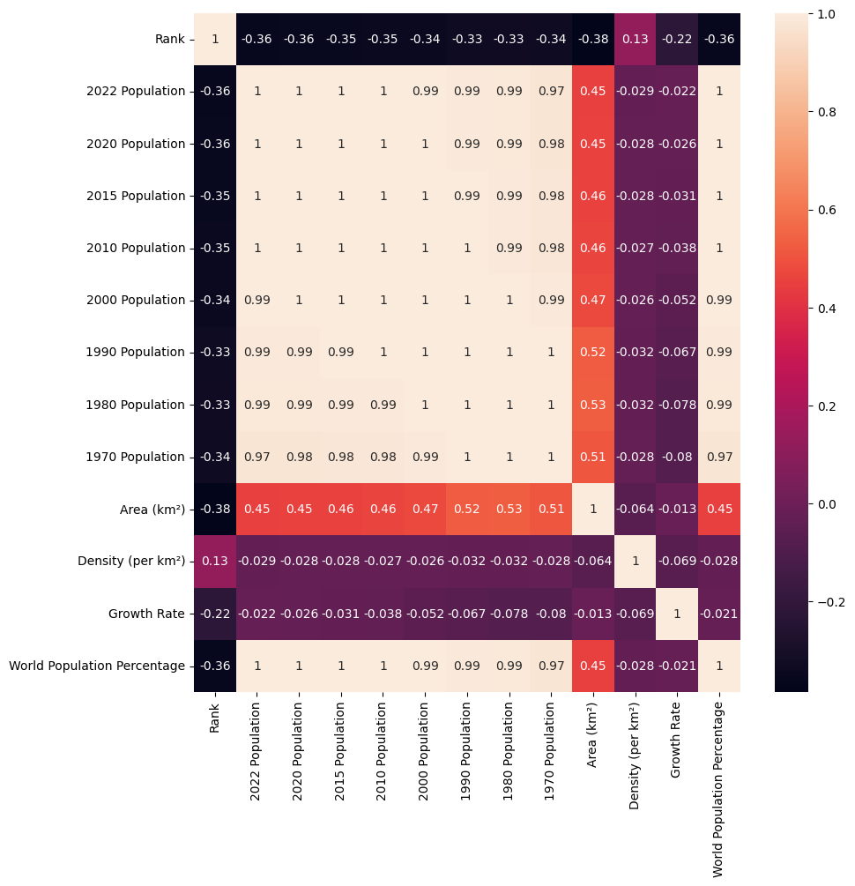
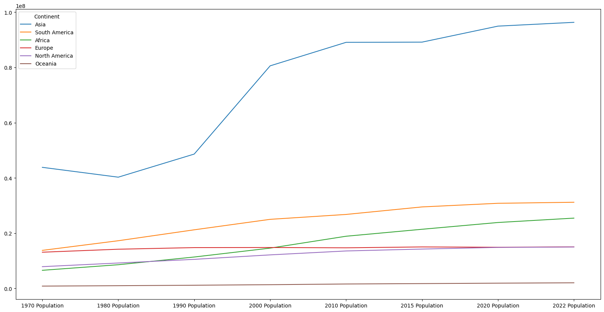
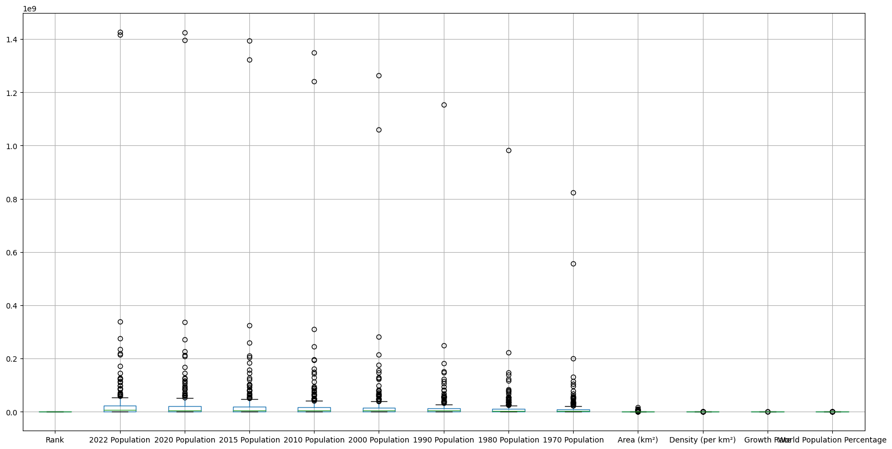

import pandas as pd
import seaborn as sns
import matplotlib.pyplot as pltpd.set_option('display.float_format',lambda x: '%.2f' % x)file='https://raw.githubusercontent.com/AlexTheAnalyst/PandasYouTubeSeries/main/world_population.csv'
#lendo o arquivo csv direto do github e criando um dataframe
df = pd.read_csv(file)
df| Rank | CCA3 | Country | Capital | Continent | 2022 Population | 2020 Population | 2015 Population | 2010 Population | 2000 Population | 1990 Population | 1980 Population | 1970 Population | Area (km²) | Density (per km²) | Growth Rate | World Population Percentage | |
|---|---|---|---|---|---|---|---|---|---|---|---|---|---|---|---|---|---|
| 0 | 36 | AFG | Afghanistan | Kabul | Asia | 41128771.00 | 38972230.00 | 33753499.00 | 28189672.00 | 19542982.00 | 10694796.00 | 12486631.00 | 10752971.00 | 652230.00 | 63.06 | 1.03 | 0.52 |
| 1 | 138 | ALB | Albania | Tirana | Europe | 2842321.00 | 2866849.00 | 2882481.00 | 2913399.00 | 3182021.00 | 3295066.00 | 2941651.00 | 2324731.00 | 28748.00 | 98.87 | 1.00 | 0.04 |
| 2 | 34 | DZA | Algeria | Algiers | Africa | 44903225.00 | 43451666.00 | 39543154.00 | 35856344.00 | 30774621.00 | 25518074.00 | 18739378.00 | 13795915.00 | 2381741.00 | 18.85 | 1.02 | 0.56 |
| 3 | 213 | ASM | American Samoa | Pago Pago | Oceania | 44273.00 | 46189.00 | 51368.00 | 54849.00 | 58230.00 | 47818.00 | 32886.00 | 27075.00 | 199.00 | 222.48 | 0.98 | 0.00 |
| 4 | 203 | AND | Andorra | Andorra la Vella | Europe | 79824.00 | 77700.00 | 71746.00 | 71519.00 | 66097.00 | 53569.00 | 35611.00 | 19860.00 | 468.00 | 170.56 | 1.01 | 0.00 |
| ... | ... | ... | ... | ... | ... | ... | ... | ... | ... | ... | ... | ... | ... | ... | ... | ... | ... |
| 229 | 226 | WLF | Wallis and Futuna | Mata-Utu | Oceania | 11572.00 | 11655.00 | 12182.00 | 13142.00 | 14723.00 | 13454.00 | 11315.00 | 9377.00 | 142.00 | 81.49 | 1.00 | 0.00 |
| 230 | 172 | ESH | Western Sahara | El Aaiún | Africa | 575986.00 | 556048.00 | 491824.00 | 413296.00 | 270375.00 | 178529.00 | 116775.00 | 76371.00 | 266000.00 | 2.17 | 1.02 | 0.01 |
| 231 | 46 | YEM | Yemen | Sanaa | Asia | 33696614.00 | 32284046.00 | 28516545.00 | 24743946.00 | 18628700.00 | 13375121.00 | 9204938.00 | 6843607.00 | 527968.00 | 63.82 | 1.02 | 0.42 |
| 232 | 63 | ZMB | Zambia | Lusaka | Africa | 20017675.00 | 18927715.00 | NaN | 13792086.00 | 9891136.00 | 7686401.00 | 5720438.00 | 4281671.00 | 752612.00 | 26.60 | 1.03 | 0.25 |
| 233 | 74 | ZWE | Zimbabwe | Harare | Africa | 16320537.00 | 15669666.00 | 14154937.00 | 12839771.00 | 11834676.00 | 10113893.00 | 7049926.00 | 5202918.00 | 390757.00 | 41.77 | 1.02 | 0.20 |
234 rows × 17 columns
df.info()
<class 'pandas.core.frame.DataFrame'>
RangeIndex: 234 entries, 0 to 233
Data columns (total 17 columns):
# Column Non-Null Count Dtype
--- ------ -------------- -----
0 Rank 234 non-null int64
1 CCA3 234 non-null object
2 Country 234 non-null object
3 Capital 234 non-null object
4 Continent 234 non-null object
5 2022 Population 230 non-null float64
6 2020 Population 233 non-null float64
7 2015 Population 230 non-null float64
8 2010 Population 227 non-null float64
9 2000 Population 227 non-null float64
10 1990 Population 229 non-null float64
11 1980 Population 229 non-null float64
12 1970 Population 230 non-null float64
13 Area (km²) 232 non-null float64
14 Density (per km²) 230 non-null float64
15 Growth Rate 232 non-null float64
16 World Population Percentage 234 non-null float64
dtypes: float64(12), int64(1), object(4)
memory usage: 31.2+ KBdf.describe()| Rank | 2022 Population | 2020 Population | 2015 Population | 2010 Population | 2000 Population | 1990 Population | 1980 Population | 1970 Population | Area (km²) | Density (per km²) | Growth Rate | World Population Percentage | |
|---|---|---|---|---|---|---|---|---|---|---|---|---|---|
| count | 234.00 | 230.00 | 233.00 | 230.00 | 227.00 | 227.00 | 229.00 | 229.00 | 230.00 | 232.00 | 230.00 | 232.00 | 234.00 |
| mean | 117.50 | 34632250.88 | 33600710.95 | 32066004.16 | 30270164.48 | 26840495.26 | 19330463.93 | 16282884.78 | 15866499.13 | 581663.75 | 456.81 | 1.01 | 0.43 |
| std | 67.69 | 137889172.44 | 135873196.61 | 131507146.34 | 126074183.54 | 113352454.57 | 81309624.96 | 69345465.54 | 68355859.75 | 1769133.06 | 2083.74 | 0.01 | 1.71 |
| min | 1.00 | 510.00 | 520.00 | 564.00 | 596.00 | 651.00 | 700.00 | 733.00 | 752.00 | 1.00 | 0.03 | 0.91 | 0.00 |
| 25% | 59.25 | 419738.50 | 406471.00 | 394295.00 | 382726.50 | 329470.00 | 261928.00 | 223752.00 | 145880.50 | 2567.25 | 36.60 | 1.00 | 0.01 |
| 50% | 117.50 | 5762857.00 | 5456681.00 | 5244415.00 | 4889741.00 | 4491202.00 | 3785847.00 | 3135123.00 | 2511718.00 | 77141.00 | 95.35 | 1.01 | 0.07 |
| 75% | 175.75 | 22653719.00 | 21522626.00 | 19730853.75 | 16825852.50 | 15625467.00 | 11882762.00 | 9817257.00 | 8817329.00 | 414643.25 | 236.88 | 1.02 | 0.28 |
| max | 234.00 | 1425887337.00 | 1424929781.00 | 1393715448.00 | 1348191368.00 | 1264099069.00 | 1153704252.00 | 982372466.00 | 822534450.00 | 17098242.00 | 23172.27 | 1.07 | 17.88 |
df.isnull().sum()Rank 0
CCA3 0
Country 0
Capital 0
Continent 0
2022 Population 4
2020 Population 1
2015 Population 4
2010 Population 7
2000 Population 7
1990 Population 5
1980 Population 5
1970 Population 4
Area (km²) 2
Density (per km²) 4
Growth Rate 2
World Population Percentage 0
dtype: int64df.nunique()Rank 234
CCA3 234
Country 234
Capital 234
Continent 6
2022 Population 230
2020 Population 233
2015 Population 230
2010 Population 227
2000 Population 227
1990 Population 229
1980 Population 229
1970 Population 230
Area (km²) 231
Density (per km²) 230
Growth Rate 178
World Population Percentage 70
dtype: int64df.sort_values(by="World Population Percentage", ascending=False).head(10)| Rank | CCA3 | Country | Capital | Continent | 2022 Population | 2020 Population | 2015 Population | 2010 Population | 2000 Population | 1990 Population | 1980 Population | 1970 Population | Area (km²) | Density (per km²) | Growth Rate | World Population Percentage | |
|---|---|---|---|---|---|---|---|---|---|---|---|---|---|---|---|---|---|
| 41 | 1 | CHN | China | Beijing | Asia | 1425887337.00 | 1424929781.00 | 1393715448.00 | 1348191368.00 | 1264099069.00 | 1153704252.00 | 982372466.00 | 822534450.00 | 9706961.00 | 146.89 | 1.00 | 17.88 |
| 92 | 2 | IND | India | New Delhi | Asia | 1417173173.00 | 1396387127.00 | 1322866505.00 | 1240613620.00 | 1059633675.00 | NaN | NaN | 557501301.00 | 3287590.00 | 431.07 | 1.01 | 17.77 |
| 221 | 3 | USA | United States | Washington, D.C. | North America | 338289857.00 | 335942003.00 | 324607776.00 | 311182845.00 | 282398554.00 | 248083732.00 | 223140018.00 | 200328340.00 | 9372610.00 | 36.09 | 1.00 | 4.24 |
| 93 | 4 | IDN | Indonesia | Jakarta | Asia | 275501339.00 | 271857970.00 | 259091970.00 | 244016173.00 | 214072421.00 | 182159874.00 | 148177096.00 | 115228394.00 | 1904569.00 | 144.65 | 1.01 | 3.45 |
| 156 | 5 | PAK | Pakistan | Islamabad | Asia | 235824862.00 | 227196741.00 | 210969298.00 | 194454498.00 | 154369924.00 | 115414069.00 | 80624057.00 | 59290872.00 | 881912.00 | 267.40 | 1.02 | 2.96 |
| 149 | 6 | NGA | Nigeria | Abuja | Africa | 218541212.00 | 208327405.00 | 183995785.00 | 160952853.00 | 122851984.00 | 95214257.00 | 72951439.00 | 55569264.00 | 923768.00 | 236.58 | 1.02 | 2.74 |
| 27 | 7 | BRA | Brazil | Brasilia | South America | 215313498.00 | 213196304.00 | 205188205.00 | 196353492.00 | 175873720.00 | 150706446.00 | 122288383.00 | 96369875.00 | 8515767.00 | 25.28 | 1.00 | 2.70 |
| 16 | 8 | BGD | Bangladesh | Dhaka | Asia | 171186372.00 | 167420951.00 | 157830000.00 | 148391139.00 | 129193327.00 | 107147651.00 | 83929765.00 | 67541860.00 | 147570.00 | 1160.04 | 1.01 | 2.15 |
| 171 | 9 | RUS | Russia | Moscow | Europe | 144713314.00 | 145617329.00 | 144668389.00 | 143242599.00 | 146844839.00 | 148005704.00 | 138257420.00 | 130093010.00 | 17098242.00 | 8.46 | 1.00 | 1.81 |
| 131 | 10 | MEX | Mexico | Mexico City | North America | 127504125.00 | 125998302.00 | 120149897.00 | 112532401.00 | 97873442.00 | 81720428.00 | 67705186.00 | 50289306.00 | 1964375.00 | 64.91 | 1.01 | 1.60 |
df.corr()C:\Users\nextm\AppData\Local\Temp\ipykernel_9008\1134722465.py:1: FutureWarning: The default value of numeric_only in DataFrame.corr is deprecated. In a future version, it will default to False. Select only valid columns or specify the value of numeric_only to silence this warning.
df.corr()| Rank | 2022 Population | 2020 Population | 2015 Population | 2010 Population | 2000 Population | 1990 Population | 1980 Population | 1970 Population | Area (km²) | Density (per km²) | Growth Rate | World Population Percentage | |
|---|---|---|---|---|---|---|---|---|---|---|---|---|---|
| Rank | 1.00 | -0.36 | -0.36 | -0.35 | -0.35 | -0.34 | -0.33 | -0.33 | -0.34 | -0.38 | 0.13 | -0.22 | -0.36 |
| 2022 Population | -0.36 | 1.00 | 1.00 | 1.00 | 1.00 | 0.99 | 0.99 | 0.99 | 0.97 | 0.45 | -0.03 | -0.02 | 1.00 |
| 2020 Population | -0.36 | 1.00 | 1.00 | 1.00 | 1.00 | 1.00 | 0.99 | 0.99 | 0.98 | 0.45 | -0.03 | -0.03 | 1.00 |
| 2015 Population | -0.35 | 1.00 | 1.00 | 1.00 | 1.00 | 1.00 | 0.99 | 0.99 | 0.98 | 0.46 | -0.03 | -0.03 | 1.00 |
| 2010 Population | -0.35 | 1.00 | 1.00 | 1.00 | 1.00 | 1.00 | 1.00 | 0.99 | 0.98 | 0.46 | -0.03 | -0.04 | 1.00 |
| 2000 Population | -0.34 | 0.99 | 1.00 | 1.00 | 1.00 | 1.00 | 1.00 | 1.00 | 0.99 | 0.47 | -0.03 | -0.05 | 0.99 |
| 1990 Population | -0.33 | 0.99 | 0.99 | 0.99 | 1.00 | 1.00 | 1.00 | 1.00 | 1.00 | 0.52 | -0.03 | -0.07 | 0.99 |
| 1980 Population | -0.33 | 0.99 | 0.99 | 0.99 | 0.99 | 1.00 | 1.00 | 1.00 | 1.00 | 0.53 | -0.03 | -0.08 | 0.99 |
| 1970 Population | -0.34 | 0.97 | 0.98 | 0.98 | 0.98 | 0.99 | 1.00 | 1.00 | 1.00 | 0.51 | -0.03 | -0.08 | 0.97 |
| Area (km²) | -0.38 | 0.45 | 0.45 | 0.46 | 0.46 | 0.47 | 0.52 | 0.53 | 0.51 | 1.00 | -0.06 | -0.01 | 0.45 |
| Density (per km²) | 0.13 | -0.03 | -0.03 | -0.03 | -0.03 | -0.03 | -0.03 | -0.03 | -0.03 | -0.06 | 1.00 | -0.07 | -0.03 |
| Growth Rate | -0.22 | -0.02 | -0.03 | -0.03 | -0.04 | -0.05 | -0.07 | -0.08 | -0.08 | -0.01 | -0.07 | 1.00 | -0.02 |
| World Population Percentage | -0.36 | 1.00 | 1.00 | 1.00 | 1.00 | 0.99 | 0.99 | 0.99 | 0.97 | 0.45 | -0.03 | -0.02 | 1.00 |
sns.heatmap(df.corr(), annot=True)
plt.rcParams['figure.figsize'] = (10, 10)
plt.show()C:\Users\nextm\AppData\Local\Temp\ipykernel_9008\2951679599.py:1: FutureWarning: The default value of numeric_only in DataFrame.corr is deprecated. In a future version, it will default to False. Select only valid columns or specify the value of numeric_only to silence this warning.
sns.heatmap(df.corr(), annot=True)
# agrupando o df por continente
df.groupby('Continent').mean().sort_values(by="2022 Population", ascending=False)C:\Users\nextm\AppData\Local\Temp\ipykernel_9008\1590826238.py:3: FutureWarning: The default value of numeric_only in DataFrameGroupBy.mean is deprecated. In a future version, numeric_only will default to False. Either specify numeric_only or select only columns which should be valid for the function.
df.groupby('Continent').mean().sort_values(by="2022 Population", ascending=False)| Rank | 2022 Population | 2020 Population | 2015 Population | 2010 Population | 2000 Population | 1990 Population | 1980 Population | 1970 Population | Area (km²) | Density (per km²) | Growth Rate | World Population Percentage | |
|---|---|---|---|---|---|---|---|---|---|---|---|---|---|
| Continent | |||||||||||||
| Asia | 77.56 | 96327387.31 | 94955134.37 | 89165003.64 | 89087770.00 | 80580835.11 | 48639995.33 | 40278333.33 | 43839877.83 | 642762.82 | 1025.02 | 1.01 | 1.18 |
| South America | 97.57 | 31201186.29 | 30823574.50 | 29509599.71 | 26789395.54 | 25015888.69 | 21224743.93 | 17270643.29 | 13781939.71 | 1301302.85 | 20.97 | 1.01 | 0.39 |
| Africa | 92.16 | 25455879.68 | 23871435.26 | 21419703.57 | 18898197.31 | 14598365.95 | 11376964.52 | 8586031.98 | 6567175.27 | 537879.30 | 126.41 | 1.02 | 0.31 |
| Europe | 124.50 | 15055371.82 | 14915843.92 | 15027454.12 | 14712278.68 | 14817685.71 | 14785203.94 | 14200004.52 | 13118479.82 | 460208.22 | 663.32 | 1.00 | 0.19 |
| North America | 160.93 | 15007403.40 | 14855914.82 | 14259596.25 | 13568016.28 | 12151739.60 | 10531660.62 | 9207334.03 | 7885865.15 | 606104.45 | 272.49 | 1.00 | 0.19 |
| Oceania | 188.52 | 2046386.32 | 1910148.96 | 1756664.48 | 1613163.65 | 1357512.09 | 1162774.87 | 996532.17 | 846968.26 | 370220.91 | 132.54 | 1.01 | 0.02 |
df2=df.groupby('Continent')[df.columns[5:13]].mean().sort_values(by="2022 Population", ascending=False)
df3=df2.transpose()#a figura esta comecando com o ano de 2020, mas queremos que comece com 1970, ou seja, precisamos inverter a ordem das variaveis do eixo x
df3=df3.iloc[::-1]
df3.plot(kind='line', figsize=(20,10))
<Axes: >
#plotando o grafico boxplot
df.boxplot(figsize=(20,10))<Axes: >
df.select_dtypes(include='object')| CCA3 | Country | Capital | Continent | |
|---|---|---|---|---|
| 0 | AFG | Afghanistan | Kabul | Asia |
| 1 | ALB | Albania | Tirana | Europe |
| 2 | DZA | Algeria | Algiers | Africa |
| 3 | ASM | American Samoa | Pago Pago | Oceania |
| 4 | AND | Andorra | Andorra la Vella | Europe |
| ... | ... | ... | ... | ... |
| 229 | WLF | Wallis and Futuna | Mata-Utu | Oceania |
| 230 | ESH | Western Sahara | El Aaiún | Africa |
| 231 | YEM | Yemen | Sanaa | Asia |
| 232 | ZMB | Zambia | Lusaka | Africa |
| 233 | ZWE | Zimbabwe | Harare | Africa |
234 rows × 4 columns